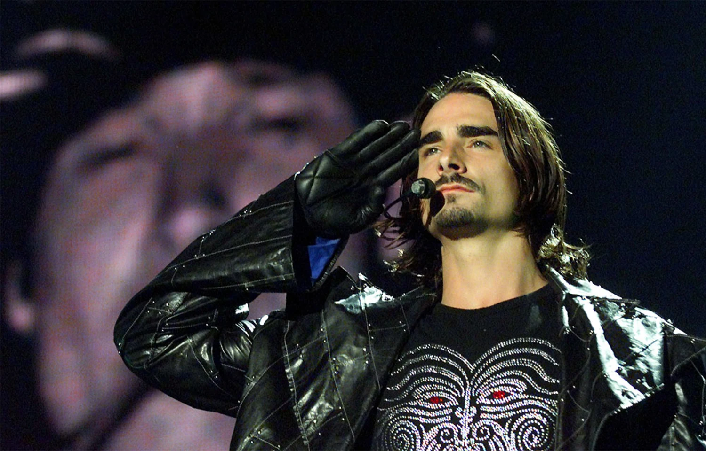
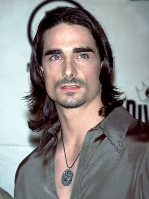

Kevin Scott Richardson nasceu em Lexington, no estado de Kentucky, Estados Unidos, em 3 de outubro de 1971, como o filho mais novo de Jerald Wayne Richardson, um trabalhador de serviços manuais, e Ann C. Richardson (nascida Littrell), uma dona de casa. Ele possui dois irmãos mais velhos, Jerald Wayne Jr. e Tim, um dos quais trabalhou como modelo.
Richardson morou em uma fazenda com sua família por nove anos até se mudar para uma cabana na Cathedral Domain Camp, um acampamento de jovens de propriedade da igreja que seu pai dirigia, onde Richardson trabalhou como conselheiro do respectivo acampamento e participou regularmente de shows de talentos promovidos pelo local até os seus dezoito anos. Durante sua infância, ele costumava passar seu tempo andando a cavalo e de bicicleta e foi atraído por esportes, o que o levou a jogar futebol americano no ensino médio e ser o capitão de seu time chamado Estill Engineers.
Outras atividades realizadas por Richardson envolveram música e atuação, aos nove anos aprendeu a tocar piano de forma autodidata e se apresentava no coral da igreja que frequentou desde criança, além de fazer parte do grupo de teatro e de xadrez da sua escola Estill County High School, o levando a receber títulos que incluíram o de "Mais Popular", "Melhor Dançarino" e de "Melhor aparência" entre os alunos. Durante o ensino médio, Richardson ganhou seu primeiro teclado, o que o levou posteriormente a se apresentar em restaurantes e festas de casamentos com uma banda chamada Paradise, que cantava canções de artistas como Bobby Brown e Journey.
Depois de terminar o ensino médio em 1990, Richardson ficou dividido entre entrar na Força Aérea estadunidense para se juntar à banda da Força Aérea ou seguir o desejo de se apresentar, ingressando na American Musical and Dramatic Academy (Academia Americana de Música e Drama) de Nova Iorque. Com o incentivo de seu pai, ele viajou para Orlando, Flórida, com seu melhor amigo Jimmy, onde passou a realizar trabalhos de modelo, compositor de canções, passou-se a se apresentar em clubes de jantar, ministrar aulas de dança de salão como um instrutor certificado, além de realizar uma participação no filme My Girl (1991).
Na Flórida, ele conseguiu um emprego como membro do elenco do parque temático Walt Disney World, onde interpretou diversos personagens, incluindo Aladdin, uma das Tartarugas Ninja, príncipe Eric, entre outros. Richardson também se tornou um guia turístico do local e a noite, se apresentava no teatro, onde cantava em um musical, canções de títulos como Chicago, Guys and Dolls e Cabaret.
Em junho de 1991, ele recebeu a ligação de sua mãe, dizendo que seu pai havia piorado de seu câncer de cólon. Embora o pai de Richardson havia sido diagnosticado originalmente em outubro de 1990, sua família não o informou na época, pois não queria preocupá-lo. Apesar disso, ele retornou para Kentucky, onde conseguiu um emprego e permaneceu com sua família. Dois meses depois, em 26 de agosto de 1991, o pai de Richardson faleceu em decorrência da doença. Ele então permaneceu em Kentucky por quase um ano; e após o incentivo de sua mãe, voltou à Flórida para perseguir seus sonhos na carreira musical. Ele conseguiu um papel em um musical através de um amigo e assim retomou seus trabalhos profissionais em Orlando.
Em março de 1993, Richardson estava fazendo um teste no MGM Studios, quando um amigo que ele conheceu em uma boate, contou a ele sobre "três rapazes que cantavam a capella o tempo todo". Então, depois de ver um anúncio recrutando membros para um novo grupo vocal, ele foi vê-los, fez o teste e foi bem sucedido para integrar o grupo nomeado como Backstreet Boys. Logo depois, ele indicou seu primo Brian Littrell para a sua formação, que ainda procurava por mais um membro. Littrell que é primo materno de Richardson (o pai de Littrell e a mãe de Richardson são irmãos), realizou um teste e no dia seguinte se juntou ao Backstreet Boys, formando assim o quinteto.
O Backstreet Boys passou a se apresentar em diversos locais pelos Estados Unidos, até obter um contrato de gravação pela Jive Records em 1994. No ano seguinte, o lançamento do primeiro single do grupo obteve um desempenho mediano em seu país, diferentemente ao obtido na Europa, levando o grupo a focar-se seus esforços neste último. O quinteto lançou dois álbuns de estúdio, Backstreet Boys  (1996) e Backstreet's Back(1997), acompanhados de respectivas turnês musicais, levando o grupo a obter uma crescente popularidade, que se estendeu aos Estados Unidos com o lançamento de seu álbum de estreia no país. Paralelamente as atividades promocionais do grupo, Richardson tornou-se um modelo para a marcas de moda Versace e Vogue, além de embaixador da marca TAG Heuer. Em novembro de 1999, ele foi eleito a estrela pop mais sexy pela revista People e o Backstreet Boys assinou um novo contrato de US$ 60 milhões de dólares com a Jive Records, após o lançamento de Millenium (1999), seu terceiro álbum de estúdio. Em 2001, Richardson realizou uma participação no vídeo musical da canção "Supergirl", pertencente a cantora Krystal Harris, o qual integrou a trilha sonora do filme The Princess Diaries (2001).